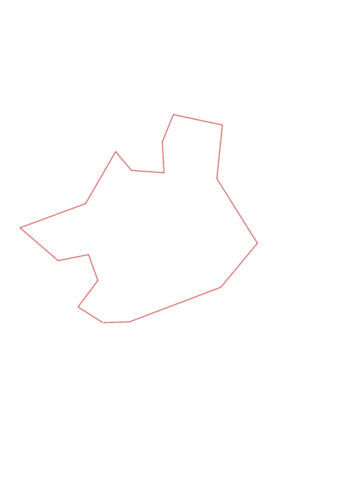
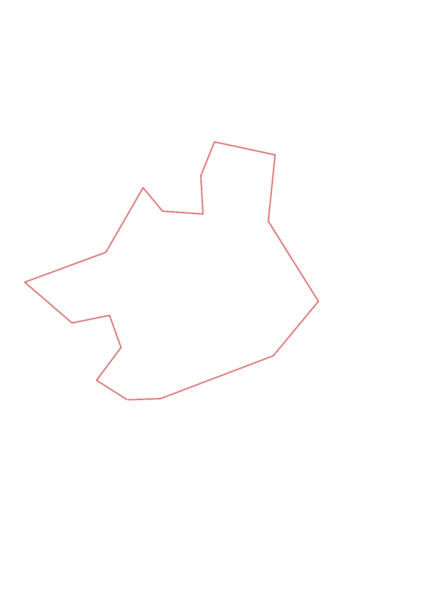

| Control |
Points |
Time Punched |
Distance |
Your Time |
Pace |
Place |
Fastest Time |
Median Time |
% Behind Fastest |
| 35 |
30 |
|
0.27 |
0:01:08 |
04:11 |
2 / 17 |
0:01:07 |
0:01:37 |
1% |
| 51 |
50 |
|
0.3 |
0:02:19 |
07:43 |
4 / 12 |
0:02:01 |
0:03:06 |
14% |
| 58 |
50 |
|
0.25 |
0:01:46 |
07:04 |
3 / 9 |
0:01:32 |
0:02:16 |
15% |
| 72 |
70 |
|
0.28 |
0:02:22 |
08:27 |
4 / 9 |
0:01:47 |
0:02:29 |
32% |
| 92 |
90 |
|
0.46 |
0:03:53 |
08:26 |
5 / 11 |
0:03:10 |
0:04:02 |
22% |
| 53 |
50 |
|
0.63 |
0:06:16 |
09:56 |
3 / 8 |
0:05:32 |
0:06:36 |
13% |
| 44 |
40 |
|
0.54 |
0:03:15 |
06:01 |
1 / 3 |
0:03:15 |
0:03:44 |
0% |
| 65 |
60 |
|
0.22 |
0:03:04 |
13:56 |
1 / 3 |
0:03:04 |
0:04:00 |
0% |
| 34 |
30 |
|
0.3 |
0:02:51 |
09:30 |
1 / 4 |
0:02:51 |
0:03:16 |
0% |
| 39 |
30 |
|
0.28 |
0:04:07 |
14:42 |
6 / 7 |
0:01:51 |
0:02:56 |
122% |
| 77 |
70 |
|
0.27 |
0:01:56 |
07:09 |
5 / 9 |
0:01:14 |
0:01:56 |
56% |
| 50 |
50 |
|
0.45 |
0:04:29 |
09:57 |
1 / 1 |
0:04:29 |
0:04:29 |
0% |
| 61 |
60 |
|
0.49 |
0:03:42 |
07:33 |
4 / 4 |
0:02:54 |
0:03:16 |
27% |
| 81 |
80 |
|
0.69 |
0:05:24 |
07:49 |
1 / 1 |
0:05:24 |
0:05:24 |
0% |
| 60 |
60 |
|
0.52 |
0:03:53 |
07:28 |
2 / 3 |
0:03:09 |
0:03:53 |
23% |
| 63 |
60 |
|
0.88 |
0:09:02 |
10:15 |
2 / 3 |
0:08:22 |
0:09:02 |
7% |
| Finish |
0 |
|
0.23 |
0:01:15 |
05:26 |
5 / 11 |
0:00:57 |
0:01:23 |
31% |
Total Distance Covered: 7.06km
Points Scored: 880
Late Penalty: -20
Final Score: 860
Total Time: 1hours 0minutes 42seconds
Efficiency: 121.81 points/km
 
